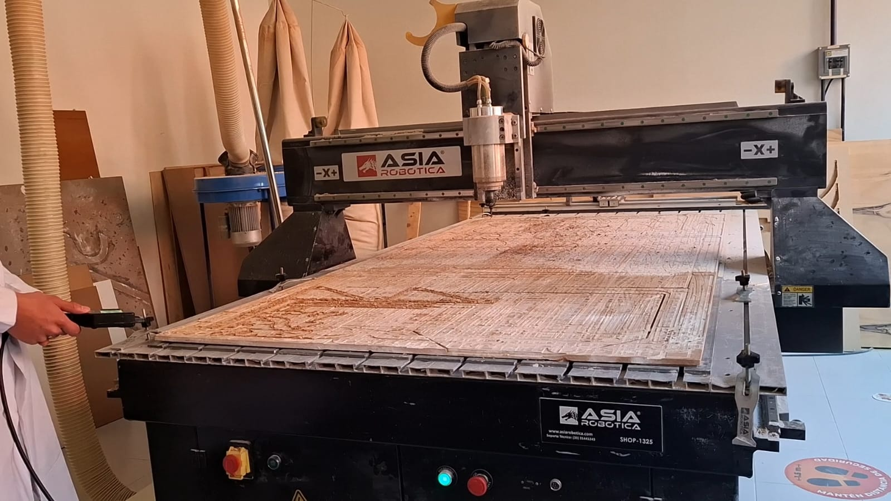
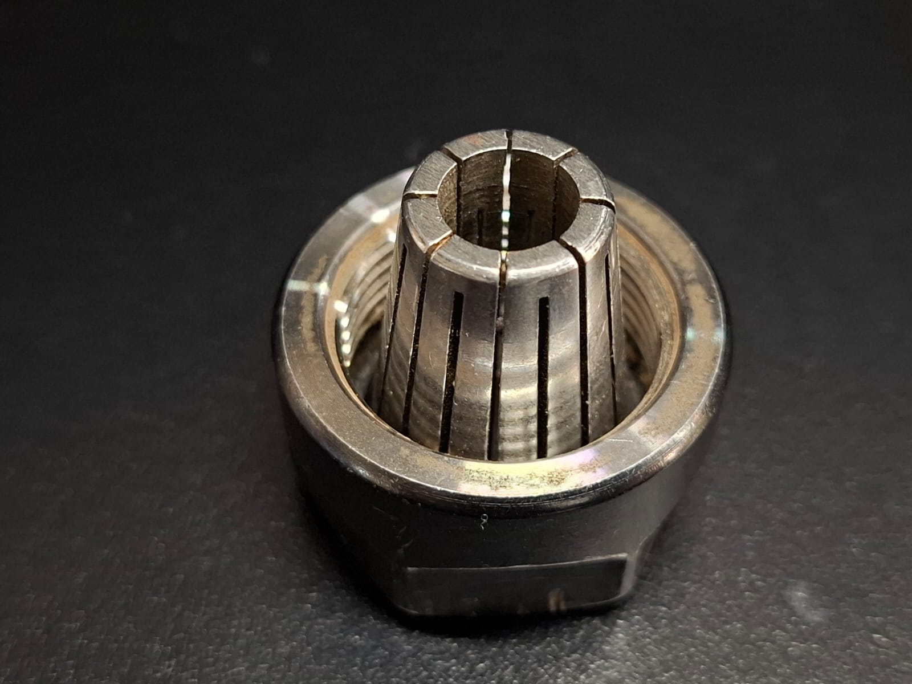
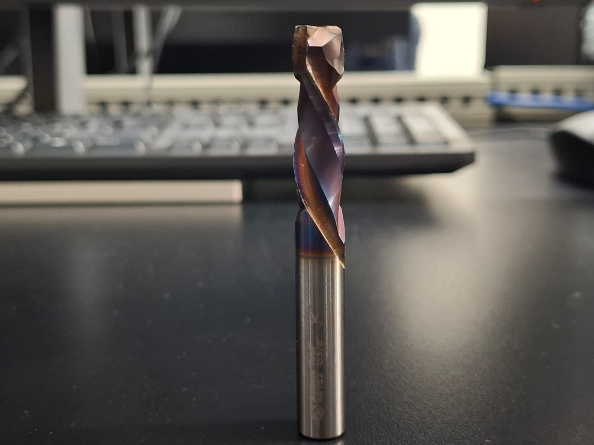
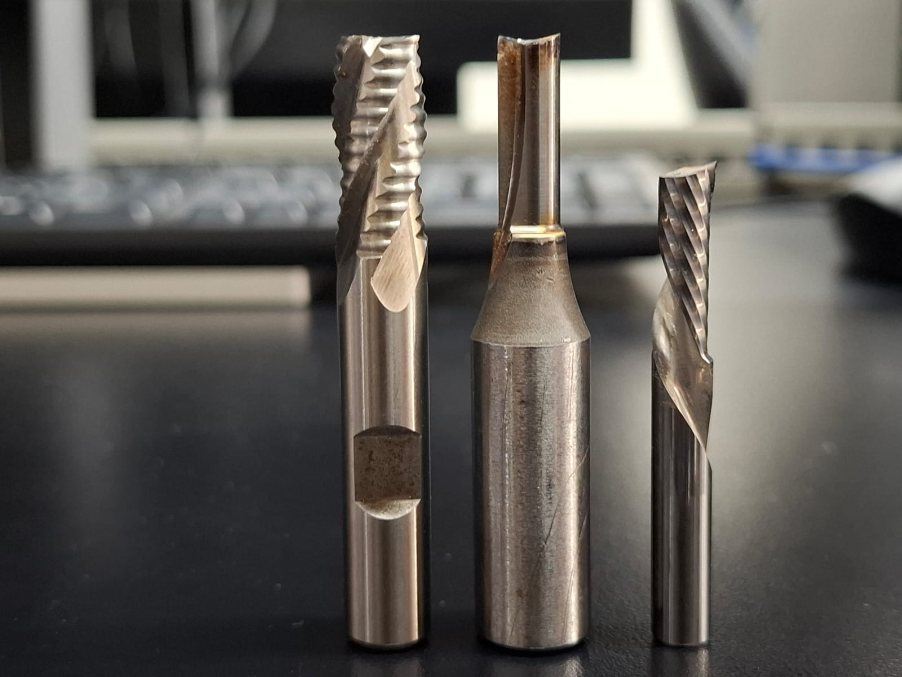
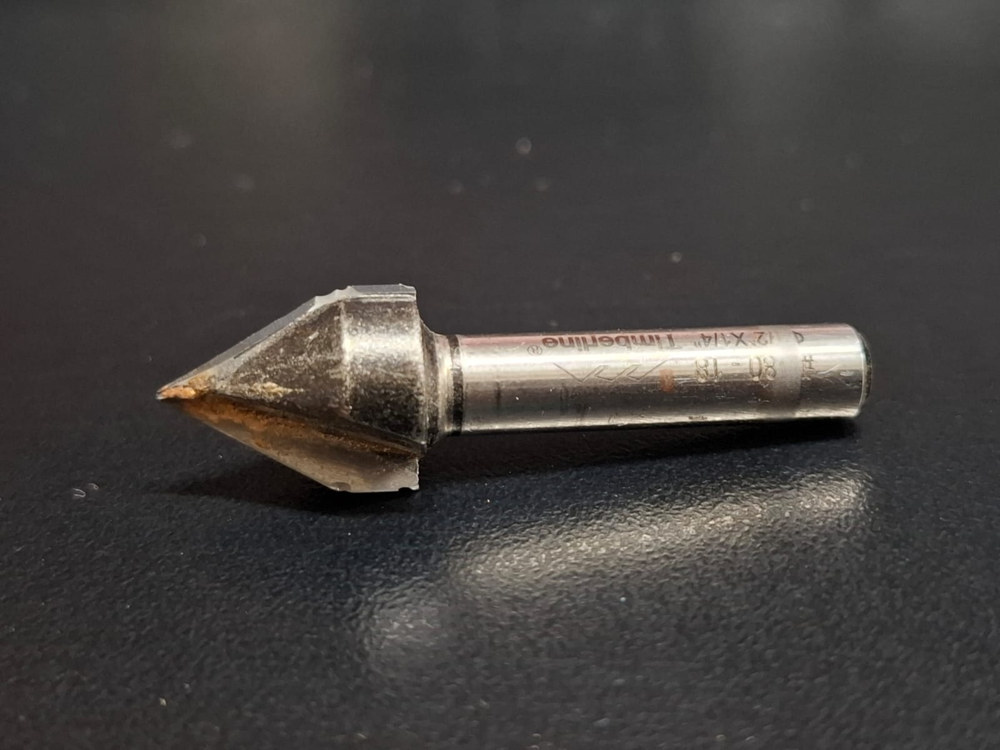
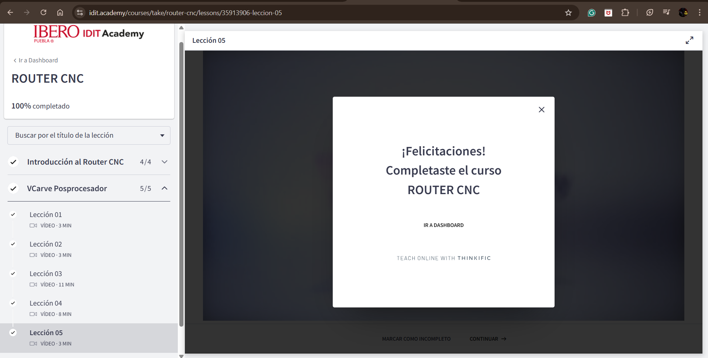
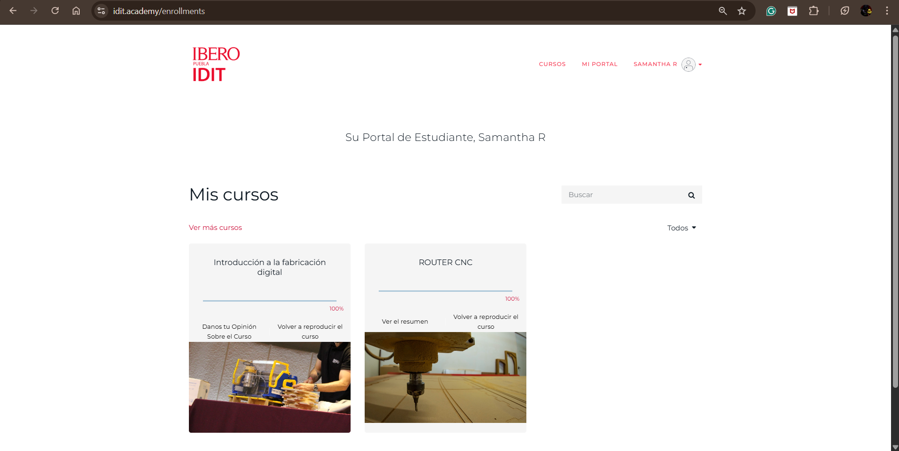

SEMANA 8 ¿QUÉ ES UN ROUTER Y SUS TIPOS?
Karen
Esta semana aprendí a usar el router CNC, la cual es una máquina que sirve para cortar y dar forma a diferentes materiales como madera, MDF o espuma rosa. Básicamente, el router sigue un diseño que tú le mandas y lo corta automáticamente.
Proceso para usar el router
- Diseño de la pieza:
Primero hice el diseño de la pieza en el programa de dibujo. Ahí definí las medidas y la forma exacta.
- Exportar el diseño a DXF:
Después pasé ese diseño al formato DXF, que es el que entiende el siguiente programa.
- Importarlo en VCarve:
Luego cargué ese archivo DXF en VCarve, donde configuré el tipo de corte, la profundidad, el material y las herramientas. Aquí es donde se genera el código que la máquina va a usar para hacer el corte.
- Guardar el código en una memoria USB:
Una vez que tuve el código, lo guardé en una memoria USB para poder llevarlo a la máquina.
- Ir al router y cortar la pieza:
En el router cargué el archivo desde la memoria, ajusté la máquina y dejé que hiciera el corte siguiendo el diseño.
Características de las puntas del router CNC
Antes de ver los tipos de punta, es importante conocer sus características, ya que cada una afecta la forma en que el router corta el material.
1. Material de la punta
Esto determina la resistencia, duración y calidad del corte.
-
Carburo (Carbide): Es el material más común y resistente. Mantiene el filo por más tiempo. Ideal para madera, MDF, acrílico y plásticos. Da cortes más limpios.
-
Acero (HSS – High Speed Steel): Más económico. Se desgasta más rápido. Sirve para maderas suaves o prácticas. No es recomendable para MDF porque se desgasta rápido.
2. Diámetro de la punta (grosor)
El diámetro define qué tan delicado o qué tan fuerte será el corte.
-
Puntas delgadas: Sirven para detalles finos. Entran en espacios pequeños. No permiten cortes muy profundos (se pueden romper).
-
Puntas gruesas: Qitan más material por pasada. Son mejores para cortes grandes. Permiten mayor profundidad sin doblarse. Son más estables.
3. Longitud de corte (Cutting length)
-
Si es corta, funciona para materiales delgados.
-
Si es larga, permite cortar materiales más gruesos. Entre más larga sea, más vibra y requiere más cuidado.
4. Longitud total de la punta
Incluye toda la herramienta, desde el filo hasta el zanco.
-
Puntas largas permiten cortes profundos.
-
Puntas cortas son más firmes y más precisas.
5. Zanco (Shank)
Es la parte de la punta que entra al router y debe coincidir con el portabrocas (collet). Un zanco grueso da más estabilidad.
Tipos de puntas del router CNC
1. Punta recta (Straight Bit)
Tiene un filo vertical. Se usa para cortes rectos y vaciados grandes. Es la punta más común en el router. Ideal para contornos, ranuras y piezas de tamaño mediano o grande.
2. Punta en “V” (V-Bit)
Tiene forma de “V”. Se usa para grabados, letras, decoraciones y líneas finas. Dependiendo del ángulo, el grabado cambia en ancho y profundidad.
3. Punta redondeada (Ball Nose)
La punta termina redonda. Se usa para relieves 3D, superficies curvas y detalles suaves. Muy común en trabajos artísticos.
4. Punta de desbaste (Roughing/End Mill)
Qita mucho material rápidamente. Se usa para la primera etapa del corte. No deja un acabado tan limpio, pero es eficiente.
5. Punta para detalles finos (Tapered Bit)
Es delgada y ligeramente cónica. Ideal para detalles muy pequeños, letras finas y grabados.
Samantha
¿Qué es un Router CNC?
Un router CNC (Computer Numerical Control) es una máquina herramienta automatizada que realiza operaciones de corte, fresado, grabado y desbaste mediante el control digital de sus movimientos. Su funcionamiento se basa en instrucciones en código G y M, que definen trayectorias, profundidades, velocidades y secuencias de operación.

Componentes Técnicos Principales
-
Estructura mecánica rígida: Fabricada normalmente en acero o aluminio para minimizar vibraciones y garantizar precisión dimensional.
-
Ejes X, Y y Z: Montados sobre guías lineales y accionados por husillos de bolas, varillas trapezoidales o correas dentadas. Estos sistemas determinan la exactitud del desplazamiento.
-
Spindle o husillo de corte: Motor de alta velocidad (desde 6,000 hasta 24,000+ rpm) encargado de mover las herramientas de corte. Puede ser refrigerado por aire o por agua.
-
Controlador CNC y drivers: Interpretan el código G y envían señales precisas a los motores paso a paso o servomotores para mover los ejes.
-
Software CAD/CAM: Sirve para diseñar (CAD) y generar estrategias de corte y trayectorias (CAM) que la máquina convierte en movimientos reales.
Puntas o Herramientas de Corte en el Router CNC
Las herramientas de corte (frecuentemente llamadas puntas, fresas o bits) son esenciales para determinar la calidad, velocidad y tipo de acabado. Cada una tiene un propósito técnico específico:
-
Fresas de corte recto (Straight bits): Se usan para cortes limpios en madera, MDF y plásticos. Ideales para ranuras o contornos.
-
Fresas de desbaste (Roughing bits): Tienen dientes más agresivos para remover grandes cantidades de material rápidamente.
-
Fresas de punta en V (V-bit): Perfectas para grabados, letras, biselados y diseños decorativos. Permiten cortes con profundidad variable.
-
Fresas de punta redonda o Ball Nose: Se utilizan para modelado 3D, superficies curvas y acabados suaves.
-
Fresas de un solo filo para acrílico (Single flute bits) Reducen el calor y evitan el derretimiento del material, logrando cortes más limpios en plásticos.
-
Fresas de doble filo o spiral (Up-cut / Down-cut):
- Up-cut: evacúa viruta hacia arriba, ideal para materiales gruesos.
- Down-cut: empuja la viruta hacia abajo, logrando bordes superiores más limpios.
- Compression bit: combina ambas para evitar rebabas arriba y abajo.
Cada punta requiere parámetros específicos de operación como velocidad del spindle, velocidad de avance (feed rate), profundidad por pasada (step down) y velocidad lateral (step over).




CURSO ROUTER SAMANTHA

